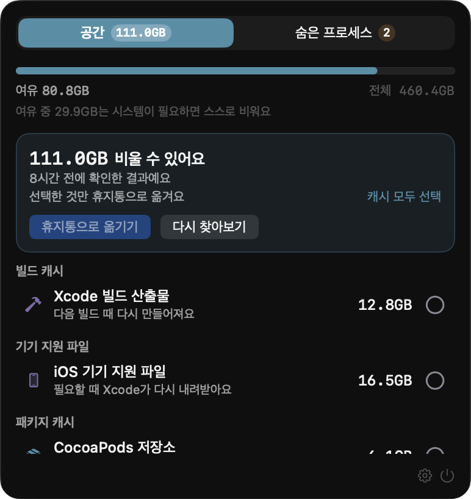
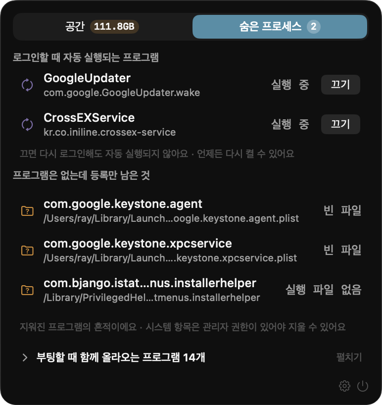
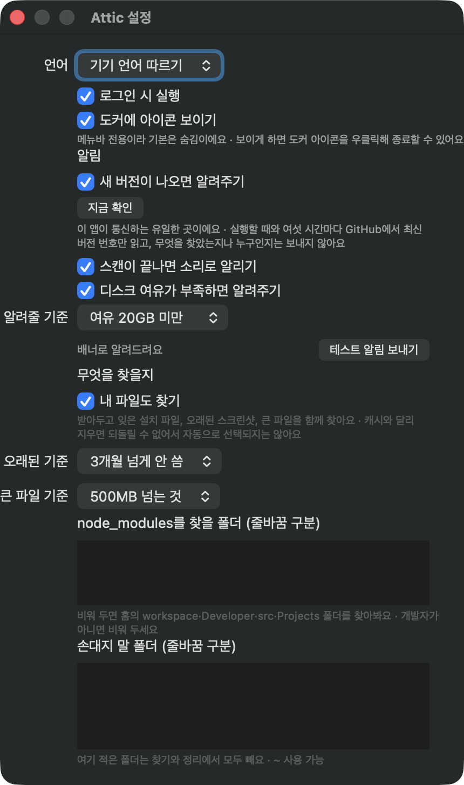

쓰지 않는데
자리만 차지하는 파일을 찾아드려요
Find the files you stopped using
but never deleted
Xcode 빌드 산출물, 기기 지원 파일, 손 뗀 프로젝트의 node_modules, 패키지 매니저 캐시. 개발하면서 쌓인 것이 특히 많이 나옵니다. 앱 캐시와 받아두고 잊은 다운로드까지 함께 찾고, 고른 것만 휴지통으로 옮깁니다. Xcode derived data, device support files, node_modules from projects you moved on from, package manager caches. Developer Macs pile up the most. It finds app caches and forgotten downloads too, and only what you pick goes to the Trash.
맥용 앱이라 이 기기에서는 받을 수 없어요. 맥에서 이 페이지를 열어주세요. This is a Mac app, so there is nothing to download here. Open this page on a Mac.

메뉴바 아이콘을 누르면 시작합니다. 1~2분이면 어디에 무엇이 쌓였는지 다 나옵니다. Click the menu bar icon. A minute or two later you know what piled up, and where.
다시 생기는 캐시는 한 번에 고르고, 지우면 끝인 파일은 하나씩 보고 정합니다. Caches that rebuild themselves go in one click. Files that are gone for good, you review one by one.
고른 것만 옮깁니다. 휴지통을 비우기 전까지는 언제든 되돌릴 수 있습니다. Only what you picked. Until you empty the Trash, every bit of it can come back.
어디에 쌓이는지 알고 찾아갑니다It knows where things pile up
다시 생기는 것과 지우면 끝인 것을 갈라서 보여줍니다. What rebuilds itself is kept separate from what is gone for good.
앱이 만든 캐시App caches
슬랙, 노션 같은 앱이 쌓아둔 웹 캐시와 임시 파일. 지워도 다시 생깁니다. Web caches from browser-based apps and per-app temporary files. They come back on their own.
오래된 빌드 산출물Stale build output
Xcode 빌드 결과, 기기 지원 파일, 패키지 매니저 캐시, 손 뗀 프로젝트의 node_modules. Xcode derived data, device support files, package manager caches, unused node_modules.
받아두고 잊은 다운로드Forgotten downloads
설치하고 남은 dmg, 몇 달 전 스크린샷, 덩치 큰 파일. 지우면 끝이라 알아서 고르지 않습니다. Installers you already used, old screenshots, large files. Never auto-selected, because deleting them is permanent.
숨어서 도는 것들Things running quietly
켤 때마다 같이 뜨는 프로그램, 그리고 앱은 지웠는데 등록만 남은 것들. Programs that launch with your Mac, and startup entries left behind by software you removed.
메뉴바에서 두 가지를 봅니다Two tabs, that is all
쌓인 파일과, 몰래 도는 프로그램. What piled up, and what runs behind your back.
얼마나 비울 수 있는지부터 보입니다The number you can act on, first
디스크가 얼마나 찼는지, 그중 얼마를 비울 수 있는지 위에 놓습니다. 항목마다 왜 지워도 되는지, 며칠째 그대로인지 적어둡니다. How full the disk is, and how much of that you can reclaim. Every row says why it is safe to remove and how long it has sat there.
- 캐시는 한 번에 고르고, 사용자 파일은 하나씩 확인 Select all caches at once, review personal files one by one
- 훑는 동안에도 찾은 것부터 바로 올라옵니다 Results appear as they are found, not at the end
- 휴지통을 비우는 것까지 여기서 Empty the Trash without leaving the window

켤 때마다 같이 뜨는 것들What starts up with your Mac
로그인할 때 올라오는 프로그램을 모아 보여주고, 필요 없으면 그 자리에서 끕니다. 앱은 지웠는데 등록만 남은 찌꺼기도 찾아냅니다. Everything that launches at login, in one list, with an off switch. It also finds entries left behind by apps you already deleted.
- 끄기는 지우는 게 아니라 등록 해제라서 언제든 되돌릴 수 있습니다 Turning one off unregisters it, never deletes it
- 부팅할 때 올라오는 시스템 항목도 함께 보여줍니다 System-wide startup items are listed too
- 창은 닫혔는데 살아 있는 개발 프로세스도 찾습니다 Dev processes still alive after you closed the window

기준은 직접 정합니다You set the thresholds
며칠부터 오래된 것으로 볼지, 몇 MB부터 큰 파일로 볼지 고를 수 있습니다. 손대면 안 되는 폴더는 적어두면 찾기에서 아예 빠집니다. Decide what counts as old, what counts as large, and which folders to leave alone. Anything you list is skipped entirely.
- 한국어와 영어, 바꾸면 바로 적용됩니다 Korean and English, switching applies immediately
- 여유 공간이 부족해지면 알려줍니다 A nudge when free space runs low
- 내 파일은 아예 안 찾도록 끌 수 있습니다 Turn off personal files entirely if you prefer

디스크를 맡기는 앱이니까You are handing it your disk
뭘 할 수 있는지보다 뭘 안 하는지가 먼저입니다. What it will not do matters more than what it can.
알아서 지우는 일은 없습니다. 마음이 바뀌면 되돌릴 수 있어야 하니까요. Nothing is deleted on its own. You need to be able to undo it.
크기를 못 잰 항목은 목록에서 빼고 그렇다고 알려줍니다. 못 들어간 폴더가 있으면 "비울 게 없어요"라고 하지 않습니다. If it could not measure something, it leaves it out and says so. If a folder could not be fully read, it will not claim there is nothing to clean.
훑어본 지 시간이 지났을 수 있으니까요. 화면에 뜨는 확보 용량은 옮기는 그 순간 다시 잰 값입니다. A scan result can be stale. The freed space you see is measured at the moment it happens.
캐시는 다시 생기지만 받아둔 사진은 아닙니다. 아는 만큼만 말합니다. A cache rebuilds itself. A photo someone sent you does not. It only claims what it knows.
손댈 수 있는 위치를 미리 정해두고 나머지는 전부 거절합니다. 옮기기 직전에 한 번 더 확인합니다. The places it may touch are fixed in advance, everything else is refused, and it verifies once more right before acting.
무엇을 요구하고, 무엇을 안 보내는지What it asks for, and what it never sends
전체 디스크 접근Full Disk Access
캐시는 다른 앱 폴더 안에 있어서, macOS가 앱마다 따로 물어봅니다. 한 번 열어주면 다시 묻지 않습니다. Finding caches means looking inside other apps' folders, and macOS asks for each one separately. Grant it once and the prompts stop.
네트워크Network
새 버전이 나왔는지 볼 때만 씁니다. 버전 번호만 읽어오고, 무엇을 찾았는지도 누가 쓰는지도 보내지 않습니다. 꺼둘 수 있습니다. Used only to check for a new version. It reads the latest version number and sends nothing about you or what it found. You can turn it off.
서명과 공증Signed and notarized
Apple 공증을 받아 경고 없이 열립니다. 업데이트도 같은 서명인지 확인하고 나서야 설치합니다. Notarized by Apple, so it opens without warnings. Updates install only after the signature is verified as ours.
지금 얼마나 쌓였는지 보세요See what has piled up
훑는 데 1~2분. 사라지는 건 직접 고른 것뿐입니다. A sweep takes a minute or two. Nothing goes anywhere unless you pick it.
맥에서 이 페이지를 열면 바로 받을 수 있어요. Open this page on a Mac to download it.